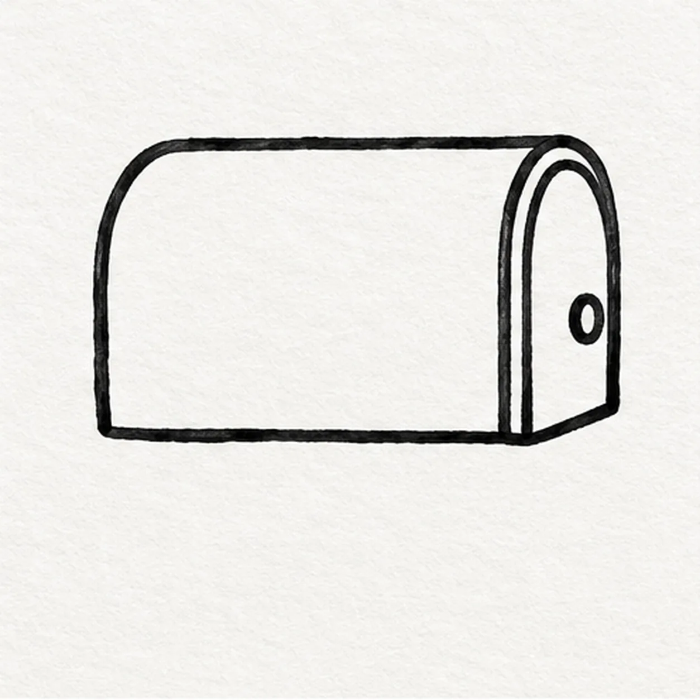
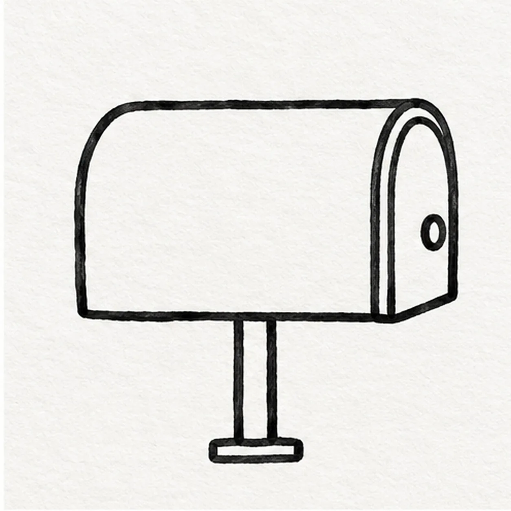
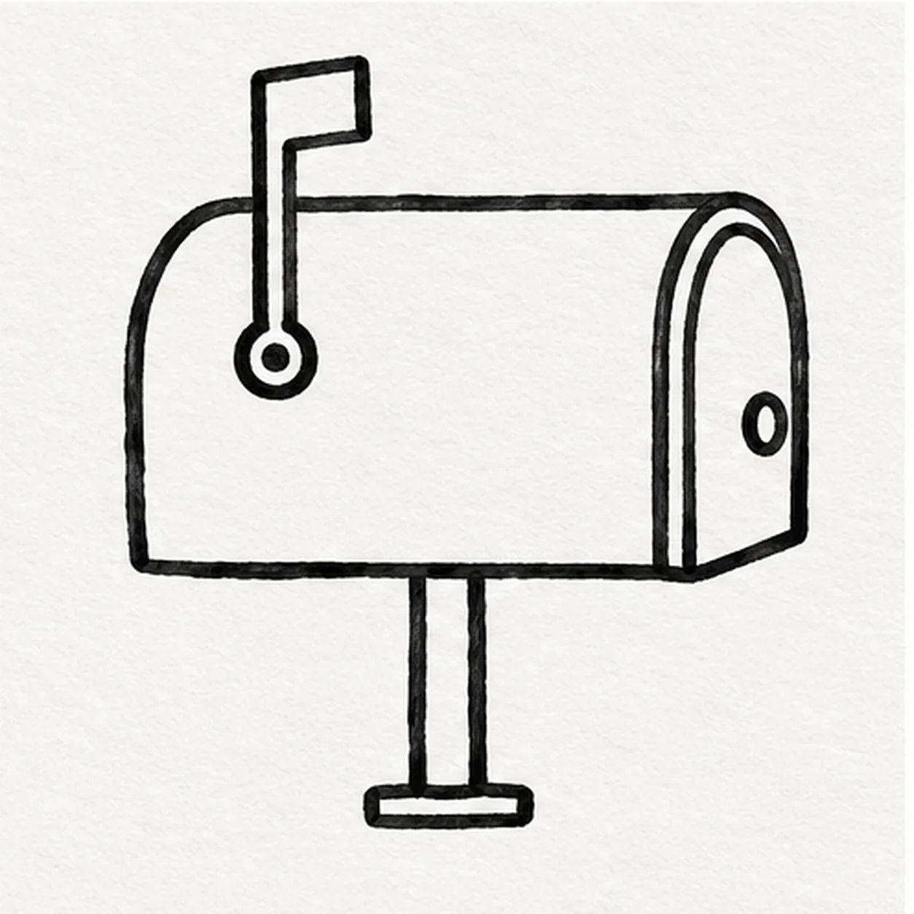

Felt-tip marker mode
Let's draw a cartoon mailbox
Treat this as one playful practice round: sketch the idea loosely, simplify the shapes, then commit with confident marker outlines and bright fills.
-
01

Draw the mailbox and door
Draw one long arched mailbox body facing right. Close its narrow front with a curved door face and put one round pull near the door edge.
Marker tip: Keep the box broad enough for an envelope emblem; make the door a narrow attached front face.
-
02

Set it on a post
From beneath the body center, drop two straight post sides and close them with a short flat base.
Marker tip: Place the post under the body center so the mailbox balances.
-
03

Raise the signal flag
Attach a short bent flag stem to a circular hinge on the upper-left side of the box, then cap it with one narrow rectangle pointing up.
Marker tip: The hinge circle touches the left side; the bent stem rises from it rather than floating above the roof.
-
04
Mark the mail and ground
On the broad side, draw one rectangular envelope emblem with a V-shaped flap. Put short broken ground marks under the post.
Marker tip: Make the envelope large enough to read at thumbnail size and keep the shadow broken.
-
05
Color the mailbox
Fill the mailbox and door cobalt blue, the raised flag coral red, the envelope emblem yellow, and the post warm gray. Keep the black outlines and broken shadow clear; leave a few paper streaks in the marker fills.
Marker tip: Pull blue strokes along the mailbox length and leave tiny white paper streaks.